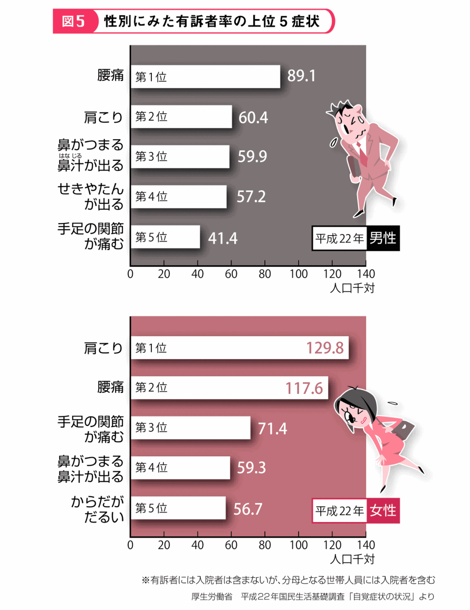
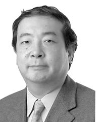

| 名医が図解! 腰痛・膝の痛みは解消できる! (1) 脊柱や膝関節のメカニズム impress QuickBooks | |
| 柳本 繁 | |
| (2015) | |
腰・ひざの構造とはたらき
人体の骨格は200以上の骨の連結・組み合わせによって構成され、筋肉や神経などと連係しながら、からだを動かしています。脊柱 （とくに腰椎 ）、大腿骨 とすねの骨をつなぐひざ関節は、体をささえる役割を持っており、衝撃 がかかると、痛みなどの問題が生じやすい部位です。本章では脊柱やひざ関節の構造およびそのはたらきを中心に解説します。
腰やひざの痛みは、2足歩行となった人類の宿命ともいえる症状です。腰痛・ひざ痛を克服 する第1歩として、まず背骨と関節のしくみと痛みが生じるメカニズムを知りましょう。
私たちのからだには、成人で通常206個前後の骨が存在しています。さまざまな形をしたこれらの骨は、おもに頭部・体幹 ・上肢 ・下肢に分類され、からだの支柱、筋肉の作用による関節運動、臓器の保護、ミネラルやエネルギーの貯蔵、血液の生成などさまざまな役割を担っています。
人体を家にたとえると、骨は柱や梁 にあたります。ならば、からだの中心軸である背骨（脊椎 ）は、いわば大黒柱。重い頭を支える大切な骨です。
腰痛の原因はさまざまですが、もっとも多いのが、この背骨の構造上の異常です。ひと口に背骨といっても、ブロックとしては、首（頸椎 ）・胸（胸椎 ）・腰（腰椎 ）・仙骨 ・尾骨 という5つに分けられ、そのうち頸椎から腰椎にかけては、計24個の"椎骨 "という小さな筒状 の骨が縦に連なっています 。
これらの椎骨は単体ではほとんど動きませんが、積み重なることで首を回す、からだをひねる、前屈 ・後屈するといった複雑な動きを可能にしているのです。
からだの複雑な動きは、筋肉の収縮・弛緩 に骨が連動しておこりますが、このときに大事な役割を果たすのが関節です。
関節は骨と骨をつなぐ部分を指し、人体のあらゆる場所に存在します。
人の動作に深いかかわりを持つ大きな関節には、 肩 関節、肘 関節、股関節 、ひざ関節などがあります。部位によって機能はさまざまですが、基本的にはどの関節も「関節包 」「関節液」「関節軟骨 」などから構成されています 。
関節包とは、骨と骨のつなぎ目全体を包む袋 状 の組織であり、内側は関節を動かすときの潤滑油 となる"関節液"で満たされています。
関節軟骨は骨と骨がぶつかり合う衝撃や、すれておこる摩擦 を緩和 ・吸収する保護膜 のようなはたらきをしています。厚さは3〜5mmほどで、水、コラーゲン、糖たんぱく質のプロテオグリカンが主成分です。関節軟骨は弾力性 があり、関節に圧力がかかると、プロテオグリカンに含まれていた水分が表面へしみ出し、骨と骨とが擦れあわないように、関節の動きをなめらかにします。そして、関節にかかった圧力がなくなれば、関節液は再び軟骨内のプロテオグリカンに吸収されます。
身体運動を可能にする器官を運動器といいます。人間を含 む脊椎 動物の運動器には、骨と関節のほかにも筋肉・腱・靭帯などが含まれます。
私たちが、からだを動かす上で、もっとも中心となる運動器は筋肉です。関節は筋肉の動きと連動して動きますが、このとき、筋肉の動きをスムースに骨に伝える役割を担うのが"腱"であり、関節の位置を正常に保つために骨と骨の仲介をしているのが"靭帯"です。筋肉・腱・靭帯の3つの要素のうちどれを欠いても、からだを思いどおりに動かすことはできません。
筋肉は、伸縮性 の高い細胞 である「筋細胞(細い線維状の細胞)」と、それを接着する「結合組織」で構成されています 。
また、種類としては心臓を動かしている「心筋」、消化管をはじめ内臓器官を動かす「平滑筋 」、骨格を動かす「骨格筋」の3つに大別されます。
3種類の筋肉のうち、心筋と平滑筋は自分の意思では動かすことのできない"不随意筋 "ですが、骨格筋は自分の意志で動かすことのできる"随意筋"です。骨格筋が収縮・弛緩をすることで、骨が関節の位置を起点として動かされています。
腱は帯状の結合組織でできています。やわらかい筋肉が硬 い骨に直接結合することができないため、腱が筋肉と骨をつなぎ合わせています。
腱の主成分はコラーゲンです。強固な組織ですが逆に伸縮性がよくないため、無理に引っぱると切れてしまうこともあります。ふくらはぎの筋肉とかかとの骨とを仲介 する「アキレス腱」は、よく知られたところでしょう。
また、腱と同じ結合組織でできている靭帯は、骨と骨とをつなぎとめています。つまり、靭帯とは関節がグラグラしないように、骨と骨をつなぐゴムバンドのようなものです 。
たとえば、ひざ関節では関節の中央部分で交差する前・後十字靭帯と内側側副靭帯、外側側副靭帯の4本の靭帯が、それぞれ上下2つの骨に結合して、関節内の骨の位置を保持しているのです。靱帯が断絶や裂傷を起こしてうまく機能しなくなると、ひざの上下の骨が正常な位置を保てず、前後左右に不安定な状態になってしまいます。
運動器トラブルを訴 える人のなかでも、多いのが「腰痛」です。また、年齢を重ねるにつれて増加しているのは「手足の関節痛」です。
平成22年度に厚生労働省が行った「自覚症状の状況」についての調査は、これまで漠然 としかわからなかった "腰痛・手足の関節痛"の実態を明らかにしました 。

これは全世代を対象に「ある症状について1,000人中何人が訴えているか」という"有訴者率 "を割り出したもの。結果、男性が訴えている症状の第1位は腰痛で、1,000人に対し約90人、第2位の肩こりは約60人、手足の関節痛は第5位で、約40人となっています。
一方、女性は第1位が肩こりで約130人、第2位が腰痛で約120人、第3位が手足の関節痛で約70人が症状を訴えています。これらのデータから、多くの人が腰痛や関節痛に悩 んでいる実態がうかがわれます。
腰や関節の痛みは、いまからおよそ200万年前、人類の祖先が2本足で立って歩き始めたことに端 を発します。
背骨を持つ脊椎動物は、初期は4足歩行ですが、人類は進化の過程で2足歩行となり、自由に使える手を獲得 しました。その一方で、体重を支える腰やひざに大きな負担を抱 えることになったのです。
2足歩行になったことによって重い頭と上体、腕 に持った荷物などの総量を、腰や脚 部で支えなければならなくなった人類。にもかかわらず、私たちの骨格は4足歩行の頃 からさほど進化していません。人間は、高度な文明を手にしたことと引き換えに、腰痛や関節痛といった宿命を背負い込 んでしまったのです。
まとめ
あらゆる動作にかかわる運動器――骨・関節などのはたらき
■骨はからだを支えたり、内臓を保護するほか、ミネラルの貯蔵、血液の生成などの役割を担う
■関節は骨と骨をつなぐとともに、筋肉などと協働してからだの複雑な動きを可能にする
■骨や関節、筋肉、腱、靭帯など、身体運動にかかわる器官を総称して「運動器」という
■腰やひざの障害が多いのは、2足歩行をする人間の宿命ともいえる
Column
からだの各所関節が変形して痛み出したり、とくに左右対称に痛みが起こった場合は、関節リウマチの疑いがあります。関節リウマチは早期発見・早期治療が重要であり、初期段階から積極的に治療を行うことで高い治療効果が期待できます。
では、関節リウマチは「何科を受診すればよいか?」と悩む人が多く見うけられます。もっとも理想的なのはリウマチの専門医がいる医療機関にかかることです。関節リウマチの診断には、検査結果による総合的な判断と、診察する医師の裁量によるところが大きいからです。
「リウマチ科」や「膠原病科」のある医療機関ではリハビリ専門の資格をもった医師が担当することが多く、「内科」や「整形外科」に専門医がいる医療機関もあります。かかりつけの医師に相談して、しかるべき医療機関に紹介状を書いてもらいましょう。
かかりつけの医師を持たない人は、インターネットで自ら探すという方法もあります。患者側が医療機関を選ぶ決め手については、なかなか難しいものがありますが、たとえば、「日本リウマチ学会」が認定する"リウマチ認定医"、「日本リウマチ財団」が認定する"リウマチ登録医"などを一つの判断基準としてもよいでしょう。各団体のホームページで検索することができます。
上半身を支える脊椎 は、人体の"大黒柱"といえます。脊椎はS字状に連なった24個の椎骨 からなり、運動による衝撃を緩和 して、骨の中を通る神経を保護しています。
からだの支柱である背骨（脊椎）が、「椎骨」と呼ばれる小さな骨の集合体であることは前項 でも触 れました。椎骨と椎骨のあいだには「椎間板 」と呼ばれる円形の線維軟骨 がクッション材としてはさまれ、椎間板が積み重なるかたちで首から骨盤 まで柱状に連なっています。
この計24個の椎骨は、直立姿勢のときに真正面から見るとまっすぐにつながっていますが、真横から見ると緩 やかなS字状のカーブを描 いています 。
このS字カーブを脊椎の"生理的弯曲 "といいます。生理的弯曲は直立歩行する人間にとって、重力を分散するサスペンションの役割をし、重たい頭を支えている筋肉の負担を和らげているのです。また、運動による衝撃や振動 なども受け止め、上体の曲げ伸ばしやひねりなどの動作を可能にしています。
脊椎の内部には、"脊髄 神経"が通っています。脊椎は、からだを支えたり動かしたりすることのほかに、神経を保護するという重要な役割も担っているのです。
また、脊椎のなかで重力や運動による負荷がいちばんかかるのが下部にある腰の骨------腰椎 です。
背骨と骨盤のつなぎ目にあたる腰椎は、背骨のなかでも体幹 の動きのかなめとなる部分です。
人間は日常生活のなかで、上半身をひねったり曲げたり、重いものを持ち上げたりする動作を頻繁 にくり返しています。この動作が腰椎部の関節、骨、椎間板、神経に対して、連続的な負担をかけています。結果、腰椎周辺の各組織は疲労 を受けやすく、痛みの震源地になっているのです。
腰椎を構成している椎骨は、前方部にあたる筒状の「椎体」と、後方部にあたる複数の突起 がついた弓形状の「椎弓」からなります。椎体と椎弓のあいだには「脊柱管」と呼ばれるトンネル状の穴が上下方向につながっており、この穴を「脊髄神経」と呼ばれる、脳からつながるたいへん重要な神経が通っています 。
脊髄神経は、脳とともに運動や知覚をつかさどる中枢神経であり、脊髄神経からの指令は末梢 神経を経て、からだの各部位に伝わっていくのです。
とくに腰椎から下では細かい神経が束になって走っており、からだの各部を動かしたり、痛い・熱いといった知覚を伝達するなどの重要な機能をつかさどっています。枝分かれした神経が馬のしっぽのように見えるところから、「馬尾 神経」とも呼ばれます 。
腰椎部に負担をかけると椎間板や脊柱管が変形し、このため神経が障害され、腰やひざの痛みはもちろん、足のしびれやまひなどの神経症状がおこる場合もあります。
椎間板とは、椎骨と椎骨のあいだにはさまっている"板状の軟骨組織"のこと。からだを動かしたときの衝撃 で、椎骨に大きな負担がかからないように、クッション材の役割を果たしています。
椎間板の中央には、水分を多く含み、弾力性に富んだ「髄核 」と呼ばれるゼラチン状の物質があります。その周囲を「線維輪 」と呼ばれる組織が何層にも重なって取り囲み、髄核を保護しています 。
これらのはたらきにより、椎間板が弾力性をキープしてくれるおかげで、私たちは上体を曲げ伸ばしたり、ひねったりという複雑な動きがスムースにできるのです。
ところが、髄核と線維輪は年齢を重ねるごとに水分や弾力性を失ってしまいます。そうなると椎間板のクッション効果が薄 れ、腰椎への衝撃も吸収しづらくなります。
車のタイヤは使い続けるとすり減ってしまいますが、これと同様に、人間のからだも長年にわたり動かし続けると、骨や軟骨が摩耗 して痛みが生じるようになります。つまり、腰やひざの痛みの原因は、老化からくる場合がほとんどなのです。
まとめ
人体の大黒柱・背骨の構造と腰痛の関係
■背骨は首から腰にかけて24個の椎骨からなり、背骨が描くS字カーブおよび椎骨と椎骨のあいだにある椎間板によって、動作時に背骨にかかる衝撃を軽減する
■腰を構成する椎骨「腰椎」には脊髄神経が通っており、椎間板や脊柱管に何らかの障害があると腰痛やまひなどがおきやすい
■加齢 とともに椎間板の弾力性が弱まるなどさまざまな要因で腰椎は変性・老化し、腰痛を引き起こす
下肢の運動・動作をつかさどるひざ関節は、負担が大きく痛みを生じやすい場所です。ひざの構造と役割を知って、その痛みの原因を探りましょう
頭から腰にかけての"ずっしり"とした重さを受け止めるのが腰椎、さらに、立つ・座る・歩く・走るなどの下半身の運動をつかさどっているのが、下肢の骨と関節です。なかでも地面から足裏に伝わる衝撃を緩和し、スムースな動きを促 すという重要な役割を担 っているのが、"ひざ関節"です。
下肢の骨は、大腿（太もも）部分の「大腿骨 」と、ひざ下（すね）部分の「骨 」、その骨を外側から支える「腓骨 」、"お皿"と呼ばれる「膝蓋骨 」の大きく4つのパーツに 分かれます。
そして、下肢の骨と骨とを接続するおもな関節は、骨盤と大腿骨をつなぐ「股関節 」、大腿骨と膝蓋骨をつなぐ「膝蓋大腿関節 」、大腿骨と骨をつなぐ「大腿骨関節 」の3つ があります。大腿骨関節と膝蓋大腿関節を合わせて、一般にひざ関節と呼びます。
人体でもっとも大きな関節がひざ関節です。大腿骨関節は全身を支え、膝蓋大腿関節は筋肉の動きを有効かつスムーズに伝える働きを担 っています。1日に何度もくり返されるひざの曲げ伸ばしにおいて、体重を支えつつ激しい動きにも耐 えるひざ関節は、その負担の大きさから、痛みを生じやすい場所となっているのです。
椎骨と椎骨のあいだをつなぐ"椎間板"と同じように、ひざ関節において、クッション材の役割を担うのが「関節軟骨」と「半月板」です。
大腿骨・骨・膝蓋骨の関節部には、各部を4mmほどの厚さで覆 う軟骨組織があります。表面はなめらかで弾力性に富み、ひざ関節の曲げ伸ばしの際には骨と骨との摩擦 を防ぐはたらきをしています 。
ひざに圧力がかかると、関節軟骨の主成分であるプロテオグリカンに含まれていた水分が表面へしみ出し、骨と骨がこすれ合わないように"潤滑油"の役目を果たします。圧力が少なくなると、その水分は再びプロテオグリカンへ吸い込まれます。関節軟骨は、いわば水分を含んだスポンジのようなもの。圧力の変化によって、水分を放出したり吸収したりするのです。
そして、大腿骨と骨のあいだにあるのが「半月板」。その名のとおり半月形をした、関節軟骨よりもやわらかい軟骨組織です。ひざの外側と内側に位置し、関節軟骨と同様、ひざに受ける衝撃を緩和するはたらきを担います 。
ひざ関節全体は「関節包 」という膜で覆われ、関節包の内側は、ヌルヌルとした透明な液体「関節液」で満たされています。骨の摩耗を防ぎ、ひざのなめらかな動きを実現させるためには不可欠なものです。
さらに、関節軟骨や半月板には血管や神経が通っていないため、関節液はこれら軟骨細胞の老廃物 を排出し、水分や栄養を与えるというはたらきもしています 。
また、関節液は関節をしばらく動かさない状態でいると粘性 が高まり、動かせばまた低くなるという性質を帯びています。激しいスポーツをする前には、関節液を最適な状態にするために、ウォーミングアップが必要です。関節がスムースに動く状態にしてから行わなければ、大きなケガにつながってしまいます。
立つ・座る・歩く・走る・ひざを屈伸させるといった運動は、下肢の筋肉の伸縮と関節が連動して動くことで実現します。
下肢の筋肉は、大きく"ひざ上の表側と裏側""ひざ下の表側と裏側"の4つにわけられます。ひざ上（太もも）の表側にあるのが「大腿四頭筋 」、裏側にあるのが「大腿屈筋群 」。そして、ひざ下（すね）の表側にあるのが「前骨筋 」、裏側にあるのが「腓腹筋 」です 。
なかでも大腿四頭筋は、人体のなかでもっとも伸縮する力が大きく、歩行はもちろん、ジャンプやキックなどの激しい動きをパワフルに行うためにも重要な筋肉。大腿直筋、外側広筋、内側広筋、中間広筋という4つの部分に分かれているため、「大腿四頭筋」という名前がついています。
大腿骨から膝蓋骨 を介して骨 までつながる大腿四頭筋は、"ひざのバネ"として曲げ伸ばしに大きくかかわっています。この筋肉が収縮すると（同時に裏側の大腿屈筋群が伸長 ）膝蓋骨が上へスライドし、それに引っぱられるかたちでひざが伸びます。次に大腿四頭筋が伸び（同時に裏側の大腿屈筋群が収縮）、膝蓋骨が下へスライドしてひざが曲がります。この動作を交互 にくり返すことで、歩行運動が成立する のです。
逆をいえば、こういった骨・関節・筋肉の連動が少しでもうまくいかないと、歩行のような単純にみえる動作もスムースにできません。老化や運動不足などの理由で大腿四頭筋の伸縮力が衰 えると、その裏側の筋肉である大腿膝屈筋とのバランスが崩 れてしまいます。ひざがまっすぐに伸びきらなくなり、じょじょに軟骨組織が劣化 、ひざの痛みが生じやすくなるのです。
ひざ関節は、全身のなかでもっとも動きが激しく、酷使 される部分といってもよいでしょう。それなのに関節がずれたりしないのは、ひざ関節の周囲に張り巡らされた"靭帯"によって骨と骨とをしっかりとつなぎとめられているからです。
靭帯とは、骨と骨をつなぐゴムバンドのような結合組織。関節の動きを安定させたり、関節の可動域を制御 するはたらきがあります。
ひざ関節の場合は、中央で前後に交差する「前十字靭帯 」と「後十字靭帯 」、関節包の外側からはさむ「外側側副靭帯 」と、内側からはさむ「内側側副靱帯 」という4本の靭帯 で、関節軟骨や半月板にずれの大きな力がかからないように、しっかりサポートしています。
コラーゲンが主成分である強靭 な繊維 の束------靱帯は、あらゆる動きに対応できる柔軟性 をもっていますが、急に激しい圧力が加わると切断されることもあります。ひざ関節は通常、4本の靱帯でバランスをとっているため、1本損傷しただけで安定性が悪くなり歩行が困難になります。
また、加齢などで靭帯の柔軟性が失われた場合は、ひざ関節の動きがスムースでなくなり、ひざの曲げ伸ばしがうまくいかなくなります。ひざを自在に動かすには、4本の靭帯が正常に機能し、上下左右にバランスよく引っぱってコントロールすることが重要なのです。
まとめ
下肢の骨・関節の構造とひざ痛の関係
■下肢の動きは、大腿骨・骨・腓骨・膝蓋骨の4つの骨とこれらをつなぐ股関節、大腿骨・膝蓋大腿（両方を合わせて、ひざ関節）の3つの関節などに支えられている
■立つ・座る・歩く・走るなど日常の動作において、ひざ関節は重要な役割を果たすと同時に負担も大きいため、痛みが生じやすい
■ひざ関節は、関節軟骨や大腿四頭筋、靭帯によって支えられており、それぞれに何らかの問題が生じるとひざ痛をおこしやすい
さらにくわしく知るためのドクターズ アドバイス
東京都済生会中央病院
整形外科部長 柳本 繁

運動器とは、骨・筋肉・関節・靭帯 ・腱 ・神経といった、身体活動を担う機能の総称 です。これら運動器はそれぞれが連携 して働いているため、どれか1つが機能不全をおこせば、スムースでなめらかなからだの動きは実現できません。また、複数の運動器が同時に障害を受けるケースもあり、いまでは運動器を全体としてとらえようとする見方が主流となっています。
そこで注目されているのが、日本整形外科学会が提唱する「ロコモティブシンドローム」（以下、ロコモ）という考え方。これは"運動器障害により、介護が必要になったり、寝たきりになる可能性が高い状態"のことを指し、和文は「運動器症候群」といいます。
高齢化社会といわれて久しい日本では、平均寿命 が82歳 という"世界一の長寿国"を誇 っています。一方で、わが国の健康寿命（日常的に介護を必要としないで、自立した生活ができる生存期間のこと）は75歳。こちらも世界一ですが、平均寿命との差の7年間は、介護が必要であることを意味します。
実際にも運動器のなかでとくに負担が集中し、トラブルを抱えやすい腰とひざは、多くの場合、加齢が深くかかわっています。なぜなら、腰椎 やひざ関節に備わる椎間板 ・関節軟骨・半月板 といったクッション機能は、年齢を重ねるうちに変性し、柔軟性を失うからです。そして、これらの軟骨組織には血管や神経が通っていないため、一度損傷すると再生しづらいという特徴があります。
つまり、クッション機能の劣化により、腰やひざへの衝撃や負担が受け止めきれなくなると、腰痛やひざ痛が生じ、その不快感と一生つきあっていかなければならない場合があるのです。
ロコモとは、運動器のはたらきが衰えて、自立した生活が送りづらくなる予備軍のこと。現在、日本全国で40歳以上の4,700万人が推定対象者となっています。運動能力低下のリスクが高い疾患 といえば、「変形性脊椎症」「変形性膝関節症」「脊柱管狭窄症 」「骨粗 しょう症 」などがあります。なかでも変形性腰椎症と変形性膝関節症は、60〜70代の女性の約7割がかかっているといわれる注意すべき疾患。腰椎やひざ関節のクッション材として機能している、椎間板や関節軟骨という組織が老化により劣化し、骨と骨がぶつかったりすり減ったりすることで腰痛やひざ痛の原因となるのです。
全身の体重を支え、あらゆる運動・動作をつかさどる腰やひざですから、症状が悪化すればその痛みで動けなくなり、最悪の場合は寝たきり状態になることも。そうならないためには、症状に気づいたら専門医の診断 を受けて早期治療を心がけることが大切です。完治は難しいとされる疾患ですが、生活習慣を改善することで症状を軽減したり、日々のトレーニングで痛みをコントロールすることは可能です。
現在は健康体の方でも、安心はできません。運動器障害は気づかないままじょじょに進行するのが一般的です。とくに症状が現れやすいのは、やはり腰とひざ。痛みはなくても、足腰が弱ってきたことを感じたら要注意。次の項目 に1つでもチェックが入れば、ロコモである可能性があります。いくつも該当 するようなら、専門機関での受診をおすすめします。
□階段を上るのに手すりが必要
□15分くらい続けて歩けない
□片足立ちで靴下 がはけない
□横断歩道を青信号でわたりきれない
□家の中でつまずいたりすべったりする
□掃除機 かけや布団の上げ下ろしなど、やや重い家事が困難
□2kg程度の買い物袋を持ち帰るのが困難
長年からだを動かすうちに骨や関節がじょじょに摩耗 し、損傷することでおこる運動器障害。これは高齢になって突然生じるものではなく、若い頃からの生活環境や習慣が大きく影響しています。
将来、介護や寝たきりの状態を避 けるためには、適度な運動を継続して行い、足腰を鍛 えることがもっとも効果的。とはいっても、わざわざスポーツを始める必要はありません。とくに腰痛持ちの方がいきなりスポーツを始めては、症状を悪化させることにもつながるので要注意です。
軽いスクワットや片足立ち、ウォーキング、ラジオ体操、ストレッチなど、日常生活の中に軽い運動をとり入れて習慣づけましょう。「運動不足だな......」「最近からだを動かしていないな......」という方は、ぜひ今日からでもロコモ予防のために実践 してみてください。
Column
腰やひざの痛みを改善したいときに、どこを訪ねたらいいかわからない、という人は少なくありません。整形外科医院のほかにも整骨院・接骨院・指圧・鍼 ・マッサージ・カイロプラクティック・整体といったさまざまな施術所があります。
まずは、"医療行為"である整形外科と、"医療類似行為"であるそれ以外の民間療法に区別します。そして、同じ民間療法(医療類似行為)でも、法に基づいたものと、そうでないものに分けます。
整骨院(または接骨院)では国家資格を有する「柔道整復師」が施術を行っているため、"法に基づいた医療類似行為"にあたります。対象となる疾患は、打撲 ・捻挫 ・脱臼 ・骨折といった、外傷性疾患のみであり、日数がたてば回復するものに限られています。
"法に基づかない医療類似行為"としてもっとも一般的なのが、カイロプラクティック。おもに脊椎のゆがみを調整するための手技を称していますが、日本ではその効果について科学的評価は定まっていません。
問診や検査によって痛みの根本原因を探り、注射や薬の処方など適切な治療を施すことができるのは、医療機関のみです。民間療法を受ける場合は、整形外科で痛みの原因を突き止め、適切な治療を受けたうえで、併用するようにしましょう。
本書シリーズのご紹介
名医が図解!
腰痛・膝の痛みは解消できる! (１)
脊柱や膝関節のメカニズム
無料
http://www.amazon.co.jp/dp/B00WLI8J7K/
人体の骨格は200以上の骨の連結・組み合わせによって構成され、筋肉や神経などと連係しながら、からだを動かしています。脊柱（とくに腰椎）、大腿骨とすねの骨をつなぐひざ関節は、体をささえる役割を持っており、衝撃がかかると、痛みなどの問題が生じやすい部位です。第１巻では脊柱やひざ関節の構造およびそのはたらきを中心に解説します。
名医が図解!
腰痛・膝の痛みは解消できる! (２)
腰痛の原因と対策
http://www.amazon.co.jp/dp/B00WLI8F5G/
腰痛は多くの場合、ライフスタイルが関係しています。痛みを改善するには、痛みの種類・程度、また原因に応じたライフスタイルの修正が必要です。第２巻では、腰痛にかかわる環境要因や原因となる病気(脊椎のトラブルが中心)について解説し、治療を含ふくめた対策について述べていきます。
名医が図解!
腰痛・膝の痛みは解消できる! (３)
膝の痛みの原因と対策
http://www.amazon.co.jp/dp/B00WLI8F1K/
ひざ痛も腰痛と同様に、痛みの種類・程度・原因はさまざまであり、それぞれに応じた対応が必要です。第３巻では、ひざ痛の要因・原因となる病気について解説するとともに、治療を含めた対策について述べていきます。
名医が図解!
腰痛・膝の痛みは解消できる! (４)
腰痛・膝の痛みのセルフケア
http://www.amazon.co.jp/dp/B00WLI8F0G/
腰痛・ひざ痛は、その発症・進行には過食（肥満）や運動不足（腰やひざ関節を支える筋肉の筋力低下）、姿勢の崩れなどライフスタイルが影響しています。第４巻では、腰・ひざ関節に負担をかけない暮らし方を紹介します。
監修者
柳本 繁（やなぎもと・しげる）
東京都済生会中央病院整形外科部長。慶應義塾大学客員准教授
昭和55年慶應義塾大学医学部卒業、慶應義塾大学整形外科学教室入局。
平成5年スイス・チューリッヒ大学整形外科バルグリスト病院留学。平成6年東京都済生会中央病院整形外科医長、平成8年慶應義塾大学整形外科学教室助手、平成11年慶應義塾大学整形外科学教室専任講師を経て、平成21年より現職。
医学博士（慶應義塾大学）。日本整形外科学会専門医。日本整形外科学会認定リウマチ医。日本小児整形外科学会評議員、日本関節病学会評議員、日本股関節学会評議員、日本人工関節学会評議員
名医が図解!
腰痛・膝の痛みは解消できる! (１)
脊柱や膝関節のメカニズム
発行日
平成27 年5月1日
監修者
柳本 繁
発行
Impress Business Development LLC
東京都千代田区神田神保町1丁目105番地
(本の内容に関するお問い合わせ先)
quickbooks_info@impress.co.jp
販売
株式会社インプレス
Copyright © 2015 Shigeru Yanagimoto All rights reserved.
協力
株式会社法研
表紙
ａｉ
制作
株式会社デジタルディレクターズ